IGNYTE: RP1 + Nivolumab in PD-1–Failed Melanoma
2026-04-06
SoCO Journal Club · April 6, 2026
IGNYTE: when a compelling signal meets an inference problem
RP1 plus nivolumab produced durable responses in anti–PD-1–failed melanoma. The harder question was not whether the signal was interesting. It was what treatment effect the study had actually established — and whether that evidence was sufficient for regulatory or clinical adoption.
Meeting pulse
A heavily engaged melanoma group
Unique Teams connections
30
Reconnects reconciled
Median time together
99 min
Median attendance after reconnects were combined
Stayed at least an hour
83%
Present for at least 60 minutes
Participation
A few ways people participated
Camera on
63%
Had the camera on at least once
Unmuted
43%
Unmuted at least once during the meeting
Raised a hand
20%
Used the Teams hand-raise signal
The paper we discussed
Wong et al. — RP1 + nivolumab after anti–PD-1 failure
Primary article · Journal of Clinical Oncology
RP1 Combined With Nivolumab in Advanced Anti–PD-1–Failed Melanoma (IGNYTE)
Wong MK, et al. J Clin Oncol. 2025;43:3589–3599.
doi: 10.1200/JCO-25-01346
IGNYTE enrolled 140 patients with advanced melanoma and confirmed progression on prior anti–PD-1 therapy. RP1 was administered intratumorally with nivolumab. By RECIST 1.1 independent central review, the confirmed objective response rate was 32.9%, including 15.0% complete responses. Median duration of response was 33.7 months; 1- and 2-year overall survival were 75.3% and 63.3%, respectively. Responses were observed in both injected and noninjected lesions, including visceral sites.
The question beneath the paper: When an intratumoral agent is combined with continued PD-1 blockade in a single-arm trial, what exactly has been demonstrated — local activity, systemic activity, contribution of RP1, activity of the combination, or some mixture of all four?
Regulatory context mattered. The meeting took place during active uncertainty around RP1’s regulatory path. The preserved Journal Club presentation reviewed the July 22, 2025 FDA complete response letter, including concerns about whether IGNYTE constituted an adequate and well-controlled investigation, heterogeneity of the study population, and contribution of components. No safety concern was identified in the sponsor’s description of that letter.
Before the discussion
The survey revealed a group that liked the signal — but not the certainty
There is no preserved transcript from this session, so the most durable record of the group’s starting position is the pre-Journal Club survey. The responses were unusually useful because they separated biological plausibility from inferential and regulatory sufficiency.
75% Familiar with IGNYTE
Three quarters of respondents were already moderately or very familiar with the IGNYTE study before the session, and 94% reported prior clinical use of an intratumoral melanoma therapy.
56% Single-arm evidence can persuade
The most common view was that single-arm studies can be persuasive when results substantially exceed historical expectations. Only 12% said such evidence is often sufficient on its own for clinical decision-making.
56% ORR meaningful — but insufficient alone
Most respondents considered objective response rate moderately clinically meaningful in PD-1–refractory melanoma but not sufficient by itself. Another 25% considered it highly meaningful when responses are durable.
69% Biology looked plausible
Sixty-nine percent rated the proposed systemic immune mechanism as either highly plausible or plausible but still somewhat uncertain. The remaining 31% called it possible but not strongly supported.
65% Single-arm design was the leading limitation
The single-arm design was the most commonly selected limitation, followed by uncertainty about the contribution of RP1 versus nivolumab (41%) and interpretation of injected versus noninjected lesions (29%).
53% Preferred randomized add-on design
A majority selected randomization of RP1 plus nivolumab versus nivolumab alone as the most convincing confirmatory design. Another 27% preferred randomization against physician’s choice.
These are the archived pre-discussion responses. They are intentionally tucked away so the recap can stay readable while preserving the full survey record for anyone who wants to inspect it.
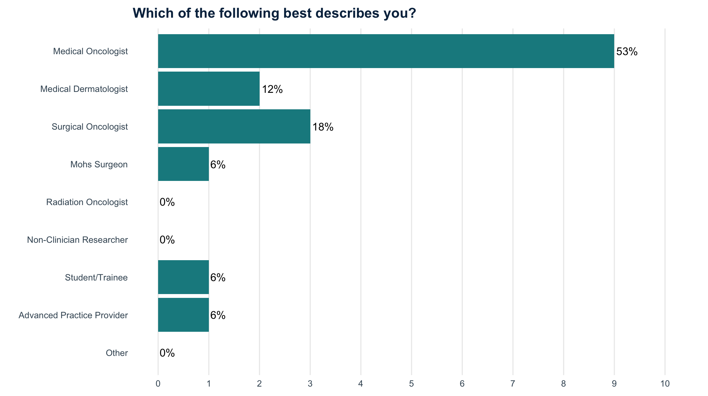
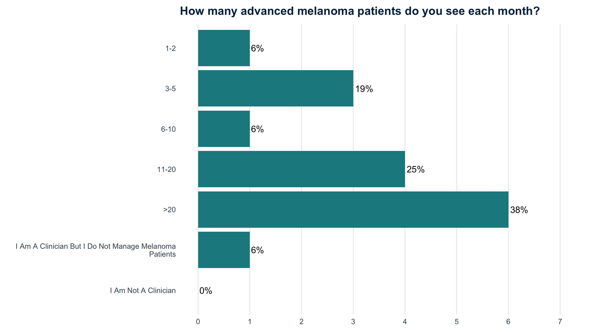
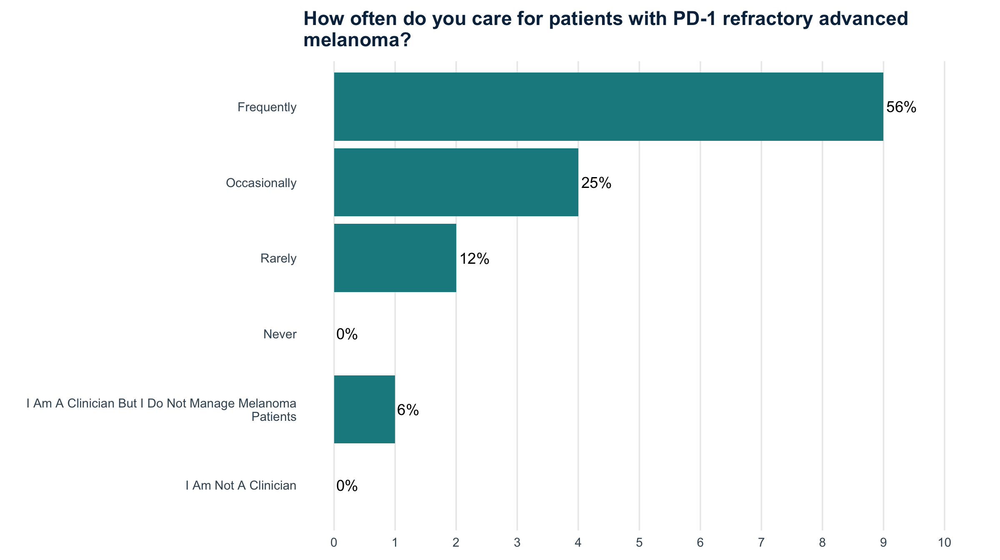
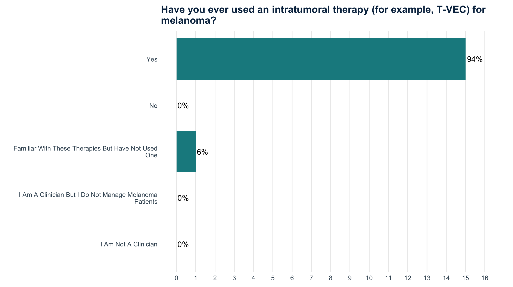
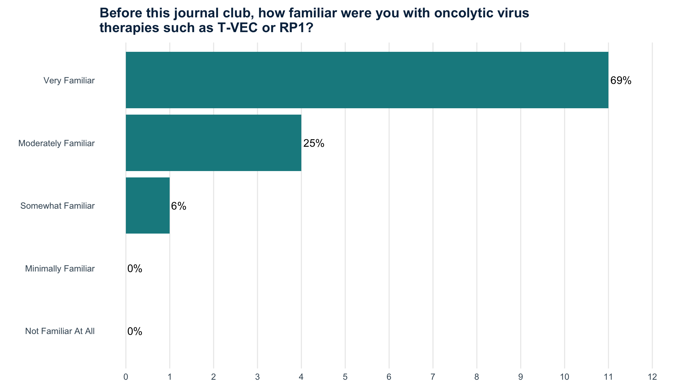
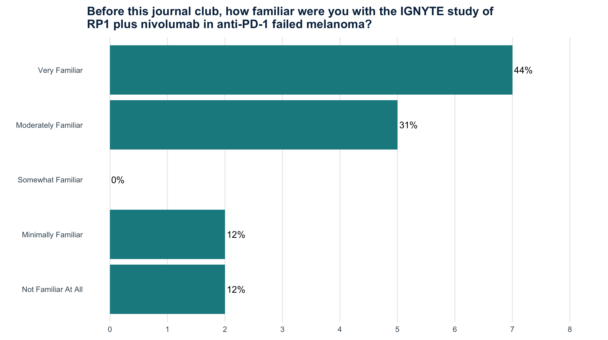
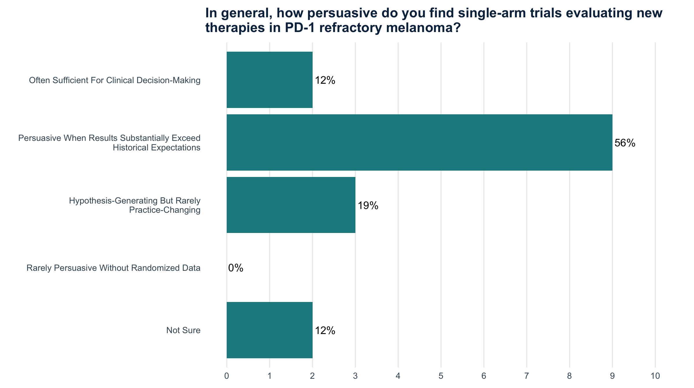
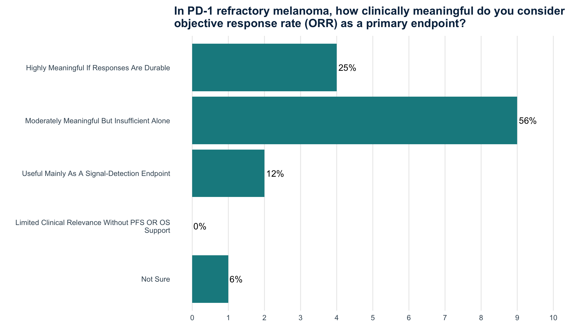
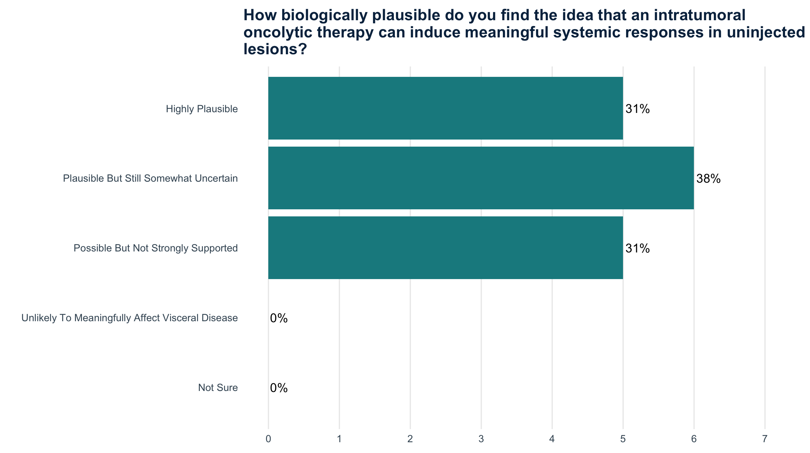
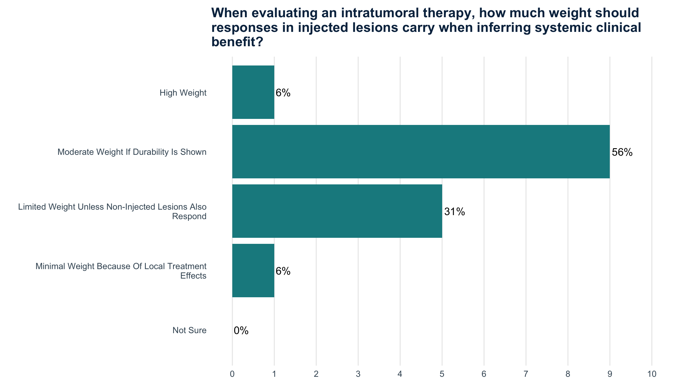
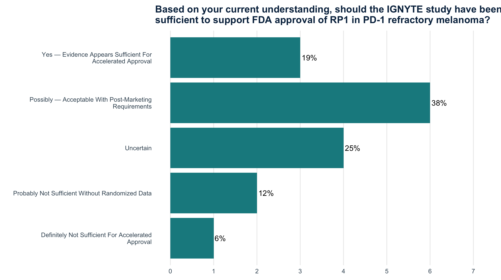
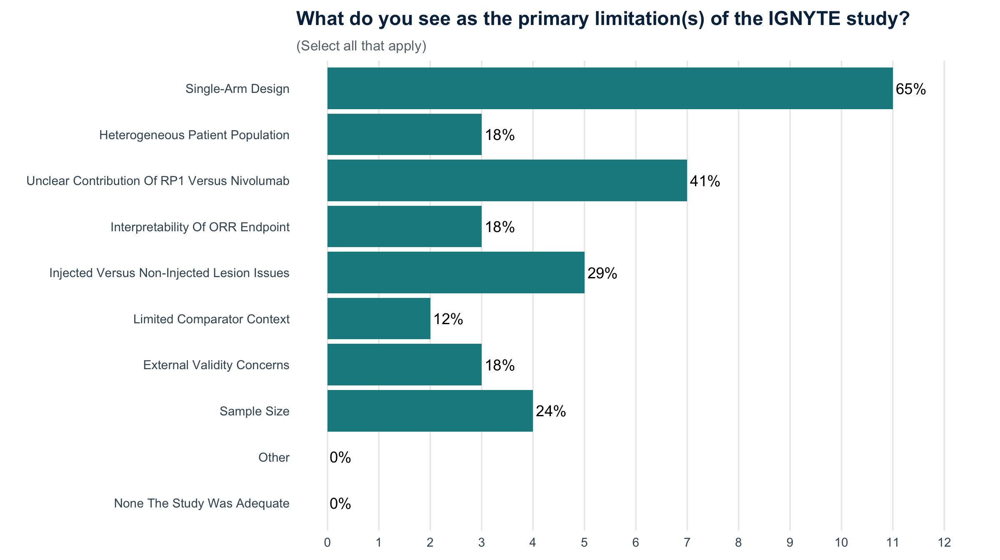
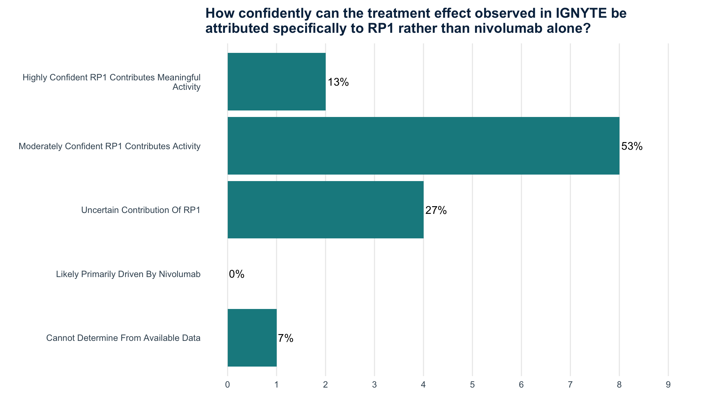
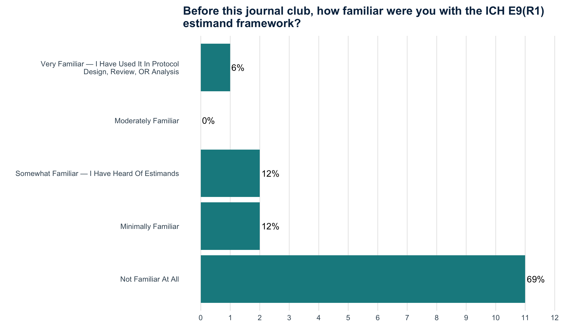
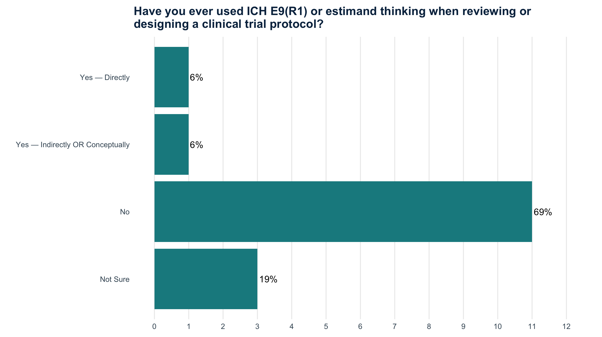
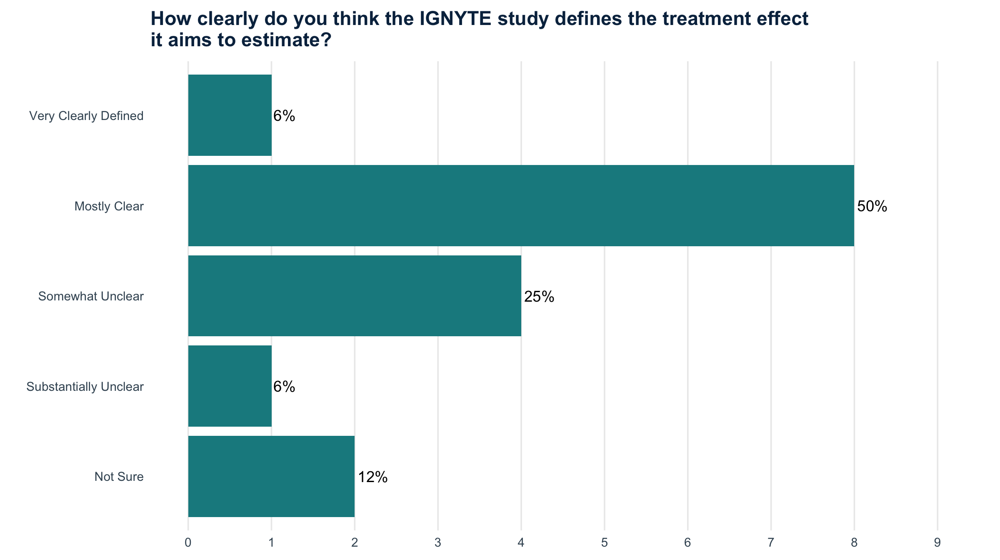
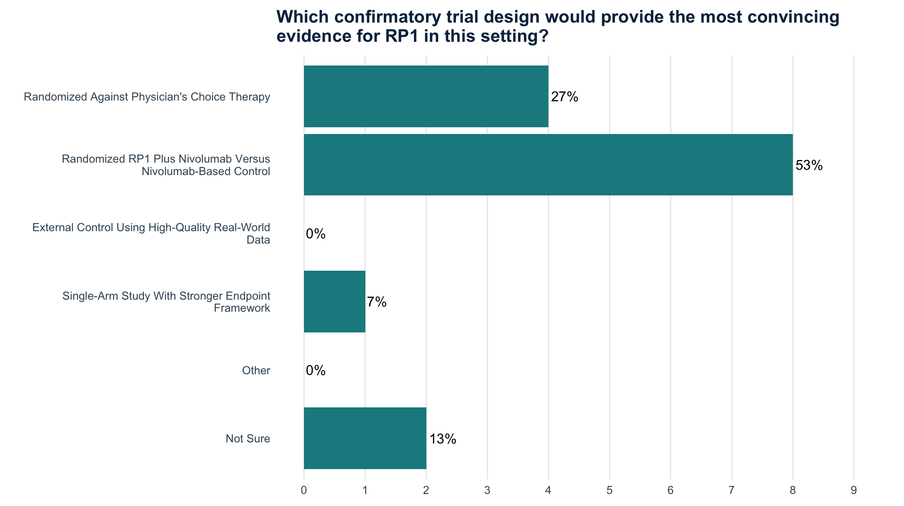
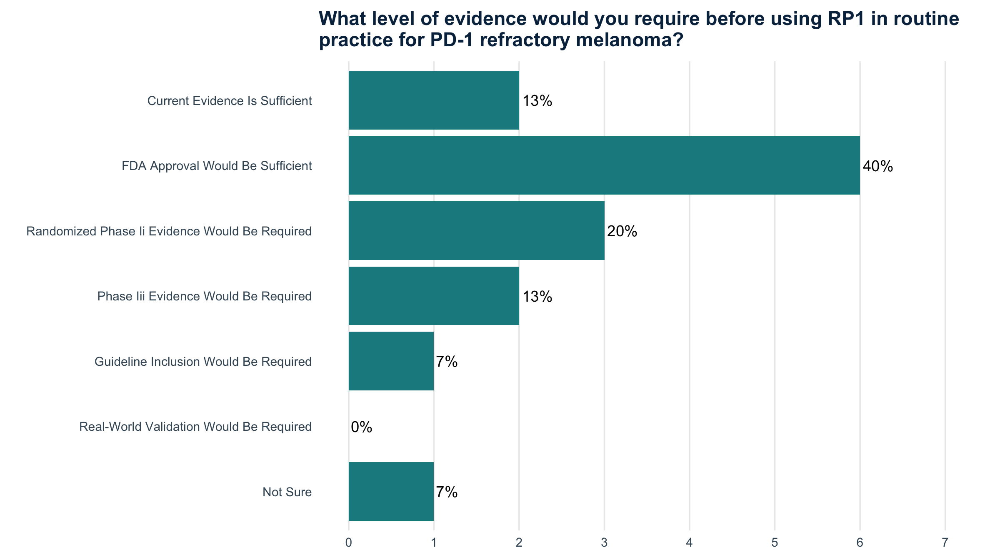
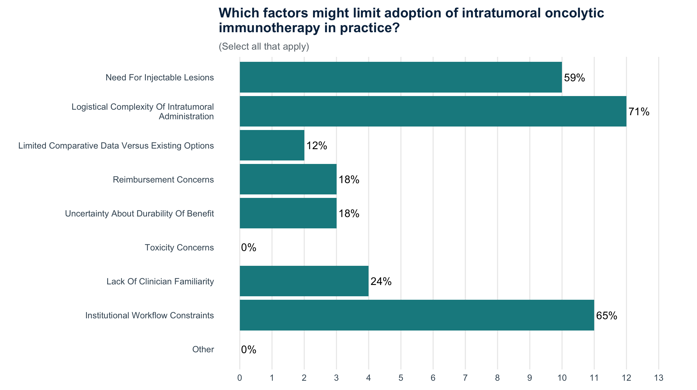
The inferential problem
The meeting became a primer on estimands
A substantial part of the session focused on a concept that was unfamiliar to much of the room: the ICH E9(R1) estimand framework. The point was not statistical terminology for its own sake. It was to force the clinical question to become explicit before choosing the analysis.
Estimand → estimator → estimate
The presentation separated three ideas that are easy to blur together: first define the treatment effect we want to learn, then choose the statistical method that can estimate it, and only then interpret the numerical result.
Estimand What treatment effect are we trying to learn?
→
Estimator What statistical method will estimate that effect?
→
Estimate What numerical result do we obtain?
1 · Population
2 · Endpoint
3 · Intercurrent events
4 · Summary measure
Local estimand
Question: what is the effect on lesions that are directly injected?
The endpoint can reflect the combined procedural and biologic effect of the intratumoral intervention.
Systemic estimand
Question: what is the effect on lesions that remain uninjected?
Response in uninjected — particularly visceral — lesions provides a different kind of evidence about systemic antitumor activity.
And IGNYTE had a second estimand problem: RP1 was given with nivolumab. Even if the combination is active, the observed response does not by itself answer how much activity is attributable to RP1, nivolumab, or their interaction. A randomized add-on contrast — nivolumab versus nivolumab + RP1 — asks that component question much more directly.
The inferential questions we kept returning to
01 · Where?
Local effect or systemic effect?
Injected lesions are directly exposed to the intervention. Their shrinkage can demonstrate local antitumor activity, but it does not by itself establish a systemic treatment effect. Noninjected lesions therefore carry special interpretive weight when the intended claim is systemic benefit.
02 · What caused it?
RP1, nivolumab, or the combination?
Because RP1 was administered with nivolumab and there was no randomized component comparison, the observed response cannot cleanly identify the contribution of RP1. The survey recognized this: 41% selected unclear contribution of components as a primary limitation.
03 · Compared with what?
Historical expectations are useful — and fragile
The paper contextualized the observed ORR against low expected activity from continued anti–PD-1 therapy. The survey showed clinicians are open to that logic when the observed result substantially exceeds historical expectations, while also worrying about population heterogeneity and external validity.
04 · What endpoint?
ORR is informative, but its meaning depends on the question
The study’s 32.9% RECIST response rate was clinically interesting, particularly with a median DOR of 33.7 months. But the group entered the discussion largely unwilling to treat ORR alone as the whole evidentiary story.
05 · What estimand?
The clinical question should precede the estimator
The ICH E9(R1) framework became an organizing language for the discussion. Most respondents entered the session with little or no familiarity with estimands, so the meeting became both a critique of IGNYTE and a practical lesson in defining the treatment effect before debating the estimator or the numerical result.
06 · What would settle it?
Randomization was the clearest path forward
When asked what confirmatory design would be most convincing, the strongest preference was an add-on comparison of nivolumab versus nivolumab + RP1. That design directly targets the contribution-of-components question that the single-arm study cannot resolve.
A response rate can be impressive and still leave the central causal question unresolved. For intratumoral combination therapy, where the response occurs and what comparison generated it are part of the treatment effect — not merely details of the analysis.
Where the discussion appears to have landed
Without a transcript, we should be careful not to recreate individual comments that were not preserved. But the survey and presentation materials point to a clear intellectual center of gravity.
The clinical signal was taken seriously. A 32.9% response rate, 15% complete-response rate, long duration of response, activity in noninjected and visceral lesions, and a comparatively favorable safety profile made RP1 + nivolumab difficult to dismiss as biologically uninteresting.
At the same time, interest in the therapy did not equal certainty about the inference. The single-arm design, patient heterogeneity, lesion-level interpretation, and inability to isolate the contribution of RP1 remained central problems. The estimand framework gave the group a useful way to separate those concerns: Where is the treatment effect being claimed? What outcome defines it? What happens when lesion roles change? And what causal contrast would actually isolate RP1’s contribution? The survey’s open-text responses repeatedly returned to the same themes: attribution of systemic benefit, contribution of components, comparability with historical controls, and the limitations of the single-arm design.
The most defensible landing point was therefore not “the study worked” or “the study failed.” It was that IGNYTE generated a compelling therapeutic signal whose regulatory and causal interpretation depended on questions the study design could not fully answer.
Practice threshold
Regulatory sufficiency and clinical adoption were not the same question
38% Possibly approval-ready with postmarketing evidence
The largest group thought IGNYTE could possibly support FDA approval if accompanied by postmarketing requirements. Another 25% were uncertain, 19% viewed the evidence as sufficient for accelerated approval, and 12% thought randomized data were probably still needed.
40% FDA approval would be enough for routine use
When the question shifted from regulatory approval to personal practice, 40% said FDA approval would be sufficient, while only 13% said the current evidence was already enough for routine use.
About this recap: no meeting transcript was available for the April 6 session. This page therefore summarizes the published IGNYTE paper, the preserved SoCO presentation, the pre-meeting survey, and the Teams attendance record. It intentionally avoids attributing discussion positions to individual attendees unless they are preserved in those materials.
Our community
Who joined us?
A small thank-you to five colleagues who stood out in the April discussion.
The ranking combines time present and recorded Teams signals with a moderator-entered discussion bonus for substantive participation that Teams cannot capture. It is meant as recognition, not as a formal measure of contribution quality.
Teams reconnects are reconciled before display. The shared conference-room connection is shown as Replimune team, and abbreviated attendee names are normalized in the attendance-processing script. The full table remains below so the underlying signals are transparent.
| Name | Minutes | Camera | Unmuted | Raised hand |
|---|---|---|---|---|
| Isaac Brownell | 105 | ● | — | — |
| Adewunmi O. Adelaja | 104 | ● | ● | — |
| Ross D. Merkin | 104 | ● | ● | ● |
| Adam Yakovich | 103 | ● | ● | — |
| Ann W. Silk | 103 | ● | ● | ● |
| David M. Miller | 103 | ● | ● | — |
| Don Lawrence | 103 | ● | ● | ● |
| Elizabeth I. Buchbinder | 103 | ● | ● | ● |
| Ryan J. Sullivan | 103 | ● | ● | ● |
| Vern Sondak | 103 | ● | ● | — |
| Manisha Thakuria | 102 | ● | — | — |
| Nikhil Khushalani | 102 | ● | ● | — |
| Michael Wong | 101 | ● | ● | ● |
| Suzanne Topalian | 100 | — | — | — |
| Adam Whalley | 99 | ● | ● | — |
| Ken Tsai | 99 | — | — | — |
| Natasha Hill | 97 | ● | — | — |
| Kamaneh Montazeri | 91 | — | ● | — |
| Mariam El-Ashmawy | 91 | — | — | — |
| Replimune team | 91 | ● | — | — |
| Claire Verschraegen | 88 | ● | — | — |
| Kevin S. Emerick | 87 | ● | — | — |
| Frances Collichio | 80 | — | — | — |
| Vishal Patel | 65 | — | — | — |
| Jacob Choi | 64 | ● | — | — |
| Maria Melendez-Gonzalez | 57 | — | — | — |
| Karam Khaddour | 43 | — | — | — |
| Alex Sorrentino | 35 | — | — | — |
| Howard Kaufman | 11 | — | — | — |
| Juliane Andrade Czapla | 10 | — | — | — |
Participation signals are descriptive only. Camera use, unmuting, and hand raises do not measure the quality or depth of participation.
Relevant updates
What happened after the April discussion
This recap preserves the questions the group was asking on April 6. The regulatory story continued to evolve rapidly afterward—and several of the issues debated in Journal Club became central to the subsequent FDA review.
April 10, 2026
FDA issued a second Complete Response Letter
Four days after this Journal Club, FDA again declined to approve the RP1 biologics license application. The regulatory questions around the interpretability of the single-arm IGNYTE data remained unresolved.
July 30, 2026
FDA advisory committee voted 10–3 in favor
The Cellular, Tissue, and Gene Therapies Advisory Committee voted 10 to 3 that the efficacy results from IGNYTE were evaluable and clinically meaningful. The discussion centered on many of the same questions raised here: reliability of the single-arm evidence, durability, systemic activity, and attribution of benefit to RP1.
August 6, 2026
FDA granted accelerated approval
FDA granted accelerated approval to vusolimogene oderparepvec-wtpg (Tudriqev; formerly RP1) plus nivolumab for adults with unresectable advanced cutaneous melanoma whose disease progressed on a PD-1–blocking antibody-based regimen. The approval was based on objective response rate and duration of response and remains subject to confirmatory evidence requirements.
August 7, 2026
“Persuaded, Not Certain”
The subsequent Journal of Cutaneous Oncology editorial reflects on the advisory committee review and the tension that defined this Journal Club as well: a clinically persuasive signal can justify action while important inferential uncertainty remains.
In retrospect: the April discussion was unusually prescient. The distinction between persuasion and certainty—and the need to specify exactly what treatment effect IGNYTE established—became the central regulatory question over the months that followed.